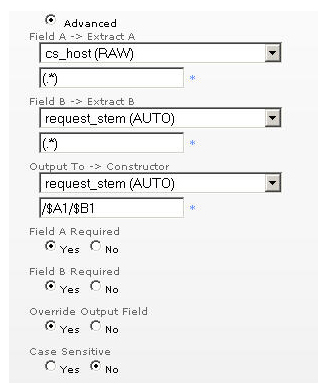

高级过滤器
简介
高级过滤器选项使您可通过一两个现有字段构建报告字段。POSIX 正则表达式和相应变量可用于获取全部或部分字段，并按您希望的顺序组合结果。
使用高级过滤器

如上图所示，高级过滤器最多使用两个字段：字段 A 和字段 B，以构建输出字段。构建按以下方式进行。"摘录 A"表达式应用于字段 A，"摘录 B"表达式应用于字段 B。这些表达式可使用完整或部分文字匹配，还可包括通配符。以下是常见通配符及其含义列表。这些表达式与 POSIX 正则表达式相符。
. 匹配任何单个字符 * 匹配先前的 0 个或多个项目 + 匹配先前的 1 个或多个项目 ? 匹配先前的 0 个或 1 个项目 () 将括号中的内容记忆为项目 [] 匹配此列表中的 1 个项目 - 在列表中创建范围t | 或者 ^ 匹配到字段开头处 $ 匹配到字段结尾处 \ 作为以上所有文字字符的转义字符
用括号 () 获取字段的各个部分。可用 $A1、$A2、$B1、$B2 符号在构造器中引用这些部分。A|B 表示字段，数字表示所引用的括号。在上例中，整个字段 A 和整个字段 B 被获取并组合成新的字段。"输出至"字段可为单独字段，也可与字段 A 或字段 B 相同。
控制
'覆盖输出字段' 控制项可用于决定在"输出字段"已存在的情况下如何操作。'必填字段' 控制项用于决定在某表达式不匹配时如何操作。